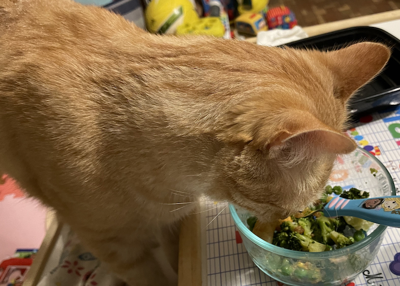

Final Syllabus
(Version AFTER student input on learning goals and grading system)
What is this course about?
Nature doesn’t reveal its secrets easily.
- Thomas Kempa
Nor do data.
But that is exactly what can make data science so thrilling!
This course is about empowering you with the wisdom to ask the best questions of data–ones that are meaningful, adaptive, and equity-minded–and the technical savvy to answer them.
Because your careers (whether in data science or not), will all involve further learning and working with others, my other primary goal is for you to cultivate self-reflection skills with regards to your own learning and your collaboration with others. In this way, I hope that you feel confident learning new skills on your own in the future and contributing to a welcoming work community.
This second course in the data science curriculum emphasizes advanced data wrangling and manipulation, interactive visualization, writing functions, working with data in databases, version control, and data ethics. Through open-ended and interdisciplinary projects, students practice the constant feedback loop of asking questions of the data, manipulating the data to help answer the question, and then returning to more questions. Prerequisite(s): COMP 112 and COMP 123 and STAT 155; STAT 253 recommended but not required.
Course learning goals
By the end of this course you should be able to:
- Sustain a habit of self-reflection in your learning process so that you are equipped for independent learning
- (+) Skills to be more self sufficient and resourceful when learning new code
- Sustain a habit of self-reflection in your collaborative work so that you can form community no matter where you go
- Create a variety of visualizations in ggplot2 that go beyond the plot types that you learned in STAT/COMP 112
- Wrangle and visualize spatial data
- Create interactive web applications and visualizations that adapt to user input
- Wrangle arbitrarily messy data using functional programming tools in R
- Acquire data from a variety of sources
- Write statements in structured query language (SQL) to access data from databases (*)
- Write code to access data from application programming interfaces (APIs)
- Write code to scrape data from websites and evaluate the ethics of collecting such data
- Use appropriate methods when working with missing data
- Translate code between R and Python (*)
- Articulate the role of machine learning and causal inference in data science work
- Iterate on the question-explore-question cycle to craft compelling data stories with attention to ethical considerations
- (+) Collect data ethically in a way that doesn’t undermine communities and people
- Maintain a digital portfolio of your data science projects
Based on our first day of class discussions, I’ve indicated with a (+) clarifications/details that you added to our existing learning goals and put a (*) next to existing goals that were underscored as desired ones.
Course communication
How to contact me
Students sometimes wonder what to call their professors. I prefer to be called Leslie (lez-lee), but if you prefer to be more formal, I am also ok with Professor Myint (pronounced “mee-int”). My preferred gender pronouns are she/her/hers.
Please help me make sure that I call you by your preferred name and pronouns too!
I love getting to talk to students outside of class time—whether about class-related topics or anything else. Come chat with me!
I’ll be setting times for drop-in hours based on feedback from the pre-course survey. I’ll update my drop-in hours on our course homepage and Moodle when they’re finalized.
I’m also happy to meet one-on-one if my normal drop-in hours don’t work. You can schedule a time to meet with me via Calendly.
I’ll also often be in the Leonard Center weight room from about 4:30-5:10 some weekdays. Feel free to say hello!
Discussion board (Slack)
Slack is a commonly used communication tool in industry and is useful to be familiar with, so we’ll be using it as our discussion board.
- If you’re new to Slack, this video provides a quick overview.
- First join our STAT/COMP 212: Fall 2023 workspace here.
- After joining, you can access our workspace here. (You might want to bookmark this if view)
Guiding values
Community is key
A sense of community and connectedness can provide a powerful environment for learning: Research shows that learning is maximized when students feel a sense of belonging in the educational environment (e.g., Booker, 2016). A negative climate may create barriers to learning, while a positive climate can energize students’ learning (e.g., Pascarella & Terenzini, cited in How Learning Works, 2012).
Our class is participating in the Classroom Community & Connectedness Project this semester. On Thursday, September 21 our class sessions will be a facilitated class activity (peers and facilitators only; I will not be present) to collectively reflect on strengthening our classroom community, with the intent of improving the learning environment for all of us.
Your participation is voluntary, but very much appreciated. The project is co-sponsored by Macalester’s Serie Center for Scholarship and Teaching and our Office of Institutional Research & Assessment.
Reflection is paramount
The content you learn will be cool (unbiased opinion!), but it is a guarantee that as technology evolves, some part of it will become out of date during your careers. What you will need to rely on when you leave Macalester is what I want to ensure you cultivate now: a good learning process. And the cornerstone of a good learning process is reflection.
Reflection is not just fundamental to learning content–it’s fundamental to learning any sort of intellectual, emotional, or physical skill. For this reason, I will be prioritizing reflection as a goal for our course in both content learning and collaborative activities. (Note that these reflection goals are the first two course learning goals.)
Mistakes are essential
An expert is a person who has made all the mistakes which can be made in a narrow field.
- Niels Bohr, Nobel Prize-winning physicist
I don’t feel comfortable working with a new R package until I’ve seen the same errors over and over again. Seeing new errors helps me understand the constraints of the code and the assumptions that I was making about my data.
We’re going to be seeking out mistakes like my cats hunt for leftover food scraps.

Communication is a superpower
Every time I go to a conference talk on a technical topic, it is striking how quickly laptops or phones come out because of the inability to follow. Academics notoriously struggle to make ideas accessible to others.
I want communication to be very different for you.
Every time you communicate ideas–whether through writing, visuals, or oral presentation–I want you to be a total boss. The end product of strong communication is a better experience for all those who have given you their attention. What’s more, the process of crafting effective communication is invaluable for deepening your own understanding:
Read to collect the dots, write to connect them pic.twitter.com/YbgnKKFUNn
— David Perell (@david_perell) July 5, 2021
How to thrive and what to expect
When taking a new course, figuring out the right workflow/cadence of effort throughout the week can be a big adjustment. And most of you are doing this for 4 different courses! Below are some suggestions for what to expect in the course and how to focus your time and attention during and outside of class.
Outside of class
Pre-class reading: Most class periods will have a required reading to review ideas from previous courses or to familiarize yourself with new concepts before seeing them again in class. My goal for these readings is for you to get the most out of class time by being able to more easily follow explanations in class and to engage most fully in class activities. I will provide Guiding Questions for each reading to focus your attention.
Scan the Guiding Questions before reading to preview the main ideas. Fill in answers to these questions as you read. Ask (and answer!) questions in the #questions channel in our Slack workspace.
Podcast discussions: About every other week, we will discuss a podcast for the first ~20 minutes of class. These podcasts are meant to expose you aspects of data science in industry. Record anything that you’re curious about, and come prepared to discuss.
Throughout the semester, if you come across any media that is relevant to the course, feel free to suggest it as a discussion piece by emailing the instructor or posting it in the #general channel in our Slack workspace.
- Record any reflections from in-class time about your learning process or interactions with peers while they are still fresh.
- After learning a new topic in class, it is helpful to immediately attempt the related exercises on the weekly homework.
- Come to instructor drop-in hours to chat about the course or anything else 😃
During class
Class time will be a mix of interactive lecture and longer stretches of group work. During the lecture portion, I will pause explanation frequently to prompt a short exercise or ask questions that you’ll reflect on individually or together.
Review your learning process and group work reflections just before class to frame how you want to engage in class. (Perhaps you’ve noted a struggle and want to try a new strategy.) I’ll always leave a few minutes at the end of class for synthesis. Use this time to update your reflections and summarize the key takeaways from class.
Grading and feedback
Instructor’s philosophy
For a long time, I have been uncomfortable with the outsized role that letter grades play in education. The article Teaching More by Grading Less (Or Differently) by Schinske and Tanner (source) shaped many of my viewpoints and may be an interesting read for you.
In short, grades tend to distract from learning (due to a greater focus on the grade than on qualitative feedback), create anxiety that hinders risk-taking and exploration, and create a power dynamic between the instructor and students that I am uncomfortable with.
If I had my way, I would never assign letter grades and only give qualitative comments all semester. Unfortunately, I am required to submit a letter grade at the end of the course.
There were two grading options presented in the preliminary syllabus. The consensus of both course sections was Option 2, which is detailed below.
Grading system
Overview
In the grading system chosen, evaluation (assigning of letter grades) occurs as a conversation between you and me–a conversation that you start. Using the qualities of A, B, and C letter grades (section below), you will self-assess your work using more detailed evaluation guidelines provided in reflection prompts and comments on your work. As part of this assessment you will propose your letter grade. I will also do this evaluation on my own and read your self-assessment afterwards. We will use all of this information to have a conversation about your progress. If we agree on the letter grade, that will be the grade you receive. If we disagree, we will use our conversation to come to a consensus. As part of consensus-building, we may discuss reframing both of our perspectives or additional work/revisions.
I recognize that no single grading system can be ideal for everyone, but I do hope that the reflection, honesty, and conversation that are central to this system support your learning. Please reach out to me if something could be going better for you. I am always willing to talk. It’s your education–I want you to have a voice in it.
What kind of work characterizes A, B, and C grades?
The table below describes the qualities of A, B, and C grades in terms of the 3 core course components: reflections, homework, and the final project.
| Course component | Letter grade: A | Letter grade: B | Letter grade: C |
|---|---|---|---|
| Self-reflection in learning process | Show clear growth and consistent thoughtfulness throughout the semester | Show some growth and some thoughtfulness throughout the semester | Show little to no growth and minimal thoughtfulness throughout the semester |
| Self-reflection in collaborative learning (groupwork) | |||
| Weekly homework | Show strong understanding of concepts across all homework assignments | Show strong understanding of concepts across most homework assignments | Show adequate understanding of concepts across most homework assignments |
| Final project | Complete a project that is high quality in all of the following aspects:
|
Complete a project that is at least ok quality in the aforementioned aspects and high quality in some aspects | Complete a project that is ok quality in the aforementioned aspects |
Details about the course components are given below:
- Self-reflection:
- We will look at the growth in your reflection process over the course of 3 substantive reflections. These will roughly come a month into the course, mid-course, and the end of the semester.
- My expectation is that your mid-course and end-of-course reflections show that your are using feedback from previous reflections.
- We will look at the consistency in your reflection process by monitoring your Process and Reflection Google Doc.
- My expectation is that you are filling this in regularly throughout class activities and through work outside of class.
- We will look at the growth in your reflection process over the course of 3 substantive reflections. These will roughly come a month into the course, mid-course, and the end of the semester.
- Homework: We will have weekly homework in which you will complete activities that we start in class. The requirements for passing the assignment will be clearly stated in the homework directions.
- If you do not pass an assignment and wish to revise your work, you may resubmit the assignment the following week. This revision needs to be submitted by 2 weeks after the original homework due date. (See my policy on late work.)
- Final project: For this semester-long project, you will receive regular feedback on the quality of the different project aspects and will have the opportunity to improve the quality of the different aspects as you continue working.
How will course components be evaluated?
In each of the 3 substantive reflections (month, mid-semester, end-of-semester), you will evaluate yourselves using self-assessment prompts and qualitative feedback from me on your reflections, homework, and project work.
For each of the 3 substantive reflections, you will receive a prompt that guides you through how to look at your work, my comments, solutions, and prior reflections to craft your self-assessment on your reflection process, homework, and project work. I will use the same prompts/process to assess your work before we come together for conversation.
Note: Your self-assessments need to be based on demonstrated evidence in the work that you submit. For example, if you have struggled with the data wrangling homework assignments and say in your self-evaluation that your understanding is now strong after reviewing feedback, this is not sufficient evidence. You would need to demonstrate your stronger understanding of data wrangling by submitting a revision of the data wrangling homework. (See policy on late work.)
Textbooks
We will primarily use the following two textbooks (freely available online):
- Modern Data Science with R (3e) by Baumer, Kaplan, and Horton (Abbreviated as MDSR)
- R for Data Science (2e) by Wickham, Cetinkaya-Rundel, and Grolemund (Abbreviated as R4DS)
The following textbooks are also good resources (also freely available online):
- Introduction to Data Science: Data Wrangling and Visualization with R and Advanced Data Science: Statistics and Prediction Algorithms Through Case Studies by Irizarry
- Tidyverse Skills for Data Science by Wright, Ellis, Hicks, and Peng
- R Programming for Data Science by Peng
Other policies
Late work
Homework assignments will be due weekly on Wednesdays at midnight. If you anticipate needing more time to complete an assignment, please email me ahead of time to discuss. Limited extensions will always be granted:
- My ideal extension: Turn in the homework by the following Monday morning at 9am. (A 4 day, 9 hour extension)
- Why is this ideal for me? I want to return feedback on homework to everyone before the following Tuesday’s class because we will be briefly reviewing homework feedback in small groups.
- Firm limit on extensions: You must turn in the homework by 2 weeks after the due date (Wednesdays at 9am).
- Why is this my firm limit? I post solutions to the homework at this point.
- What if it’s past the 2-week limit and you still want to turn in the homework in some form? If this is the case, you need to create your own equivalent homework. This involves mapping the original homework’s exercises to a new dataset and completing those exercises. Note that I can’t make any guarantees about when I can get you feedback on this late submission. (Only guarantee = by the end of the semester)
Academic integrity
Academic integrity is the cornerstone of our learning community. Students are expected to be familiar with the college’s standards on academic integrity.
I encourage you to work with your classmates to discuss material and ideas for assignments, but in order for you to receive individualized feedback on your own learning, you must submit your own work. This involves writing your own code and putting explanations into your own words. Always cite any sources you use, including AI (see section below).
Artificial intelligence (AI) use
Learning to use AI tools is an emerging skill that we will explore together in this course. I expect you to use AI (ChatGPT, Google Bard)—in fact, some assignments may require it.
However, you should be aware of the limits of AI:
- AI is a tool, but one that you need to acknowledge using. Any ideas, language, or code that is produced by AI must be cited, just like any other resource. [sample suggestion: Please include a paragraph at the end of any assignment that uses AI explaining what you used the AI for and what prompts you used to get the results.] Failure to do so is in violation of the academic integrity policy at Macalester College.
- Don’t trust anything AI says. If it gives you a number, fact, or code, assume it is wrong unless you either know the answer or can check in with another source. AI works best for topics you understand.
- If you provide minimum effort prompts, you will get low quality results. You will need to refine your prompts in order to get good outcomes. This will take work.
- Be thoughtful about when this tool is useful. Don’t use it if it isn’t appropriate for the case or circumstance.
- The environmental impact of AI should not be ignored. The building and usage of AI tools consumes a lot of energy (see here and here). For this reason, we will be very thoughtful about when we use AI and will discuss other sustainability behaviors that we can incorporate into our lives to offset this usage.
How to cite usage of AI: Please copy and paste all prompts and output into an Appendix section accompanying each problem of an assignment.
If you have any questions about your use of AI tools, please contact me to discuss them.
Course project
The best way to learn data science and feel like a data scientist is to work on meaningful data-driven projects. The course project will be a semester-long, collaborative experience in which you investigate a series of meaningful questions through one or more datasets. Through collaboration, you will be able to build something way cooler than you could do alone.
My hope is for everyone to build something that you would be proud to showcase to an employer on your digital portfolio (your personal website). More details about the project can be found on the Project page.
The environment you deserve
I want you to succeed. Both here at Macalester and beyond. To help make this happen, I am committed to the following.
Respect: Everyone comes from a different path through life, and it is our moral duty as human beings to listen to each other without judgment and to respect one another. I have no tolerance for discrimination of any kind, in and out of the classroom. If you are seeking campus resources regarding discrimination, the Department of Multicultural Life and the Center for Religious and Spiritual Life are wonderful resources.
Sensitive Topics: Data science applications span issues in science, policy, and society. As such, we may sometimes address topics that are sensitive for you. I will try to announce in class if an assignment or activity involves a potentially sensitive topic. If you have reservations about a particular topic, please come talk to me to discuss possible options.
Accommodations: If you need accommodations for any reason, please contact Disability Services to discuss your needs, and speak with me as soon as possible afterwards so that we can discuss your accommodation plan. If you already have official accommodations, please discuss these with me within the first week of class so that you get off to a great start. Contact me if you have other special circumstances. I will find resources for you.
Title IX: You deserve a community free from discrimination, sexual harassment, hostility, sexual assault, domestic violence, dating violence, and stalking. If you or anyone you know has experienced harassment or discrimination, know that you are not alone. Macalester provides staff and resources to help you find support. More information is available on the Title IX website.
General Health and Well-being: I care that you prioritize your well-being in this semester and beyond. Investing time into taking care of yourself will have profound impacts on all aspects of your life. Remember that beyond being a student, you are a human being carrying your own experiences, thoughts, emotions, and identities. It is important to acknowledge any stressors you may be facing, which can be mental, emotional, physical, cultural, financial, etc., and how they can have an impact on you. I encourage you to remember that you have a body with needs. In the classroom, eat when you are hungry, drink water, use the restroom, and step out if you are upset and need some air. Please do what is necessary so long as it does not impede your or others’ ability to be mentally and emotionally present in the course. Outside of the classroom, sleeping well, moving your body, and connecting with others can be strategies can help nourish you. If you are having difficulties maintaining your well-being, please don’t hesitate to contact me and/or find support from physical and mental health resources here and here.